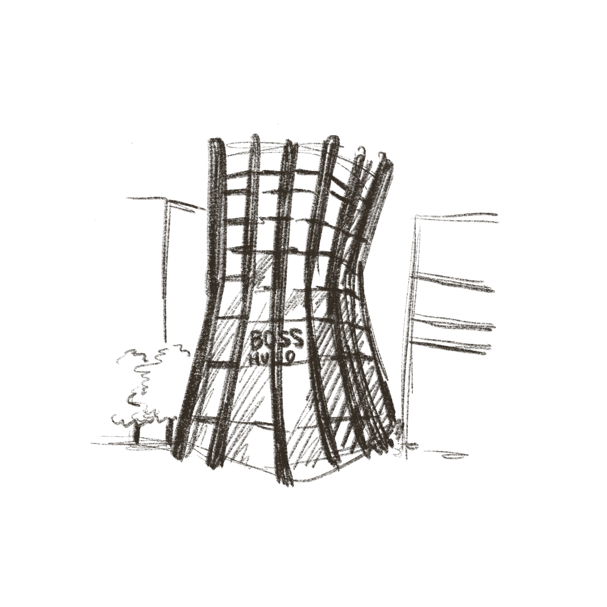
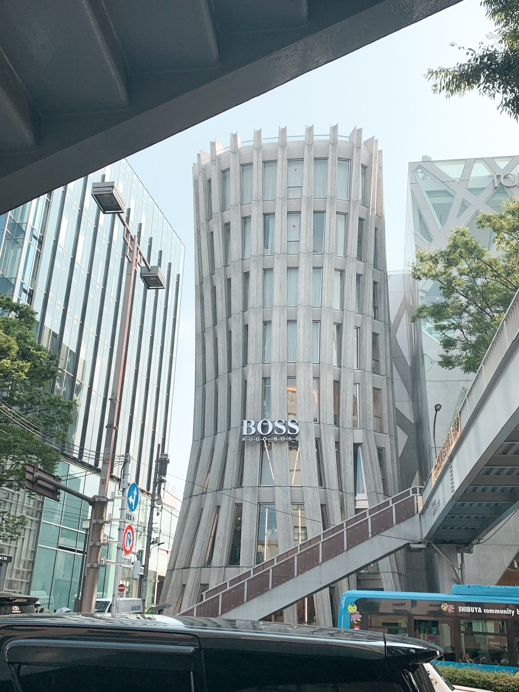
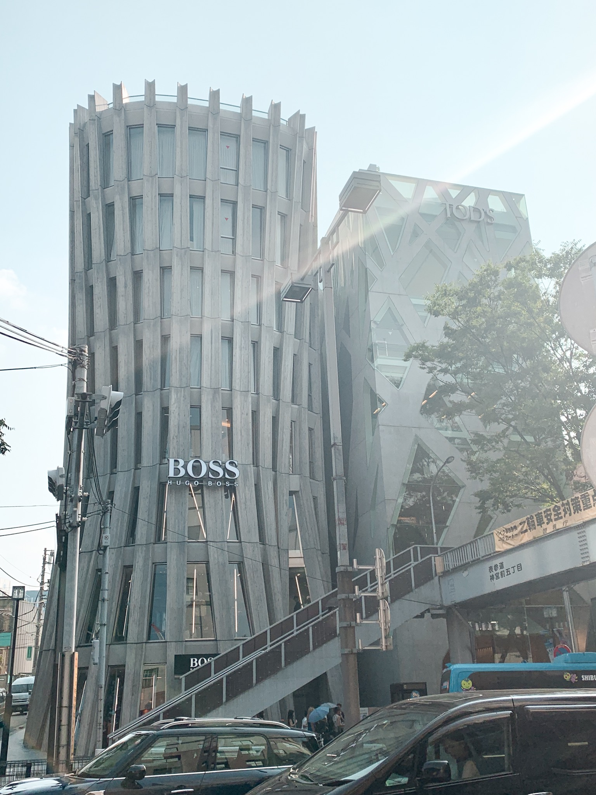

BOSS HUGO
- Architect: Norihiko Dan & Associates
- Year: 2013
Right next to TOD'S is BOSS HUGO's building by Norihiko
Dan and Associates. Similar to TOD'S, the architecture takes
inspiration from the rows of zelkova (keyaki) trees lining
the streets of Omotesando. The verticality of the trees are
expressed by the branch like details on the facade.
As described in an ArchDaily article: "The building’s structure
is composed of multiple leaf-shaped columns made from steel
reinforced concrete and arranged on the outer shell. The
wood-like texture on these columns was developed by pouring
concrete into a wooden mold."


